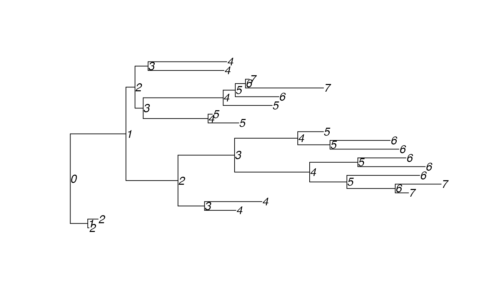

Determines the depth of each node, defined as the number of steps from the root.
(So the root has depth zero, its children have depth one, etc.)
The output is given as a list of two vectors: tipDepths gives the depths of the tips, and nodeDepths gives the depths of the internal nodes.
This replaces the deprecated dists function.
The code is based on that used in the function computeHeights in package treeCentrality.
getDepths(tree)a tree of class phylo or phylo4. The tree should be binary and rooted; if not it will be coerced into a binary rooted tree using multi2di, if possible.
A list of two vectors: tipDepths gives the depths of the tips, and nodeDepths gives the depths of the internal nodes.
## Find the node depths in a random tree:
tree <- rtree(20)
treeDepths <- getDepths(tree)
## Plot tree with node depths labelled:
tree$tip.label <- treeDepths$tipDepths
tree$node.label <- treeDepths$nodeDepths
plot(tree, show.node.label=TRUE)
